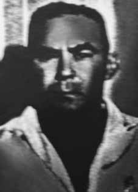

José
Mendes
de Sá
Roriz
CIRCUNSTÂNCIAS DA MORTE
Não obstante encontrar-se na clandestinidade, em janeiro de 1973, o local onde estava escondido no Rio de Janeiro foi encontrado e invadido por agentes da repressão, mas José conseguiu fugir. Semanas depois, no dia 28 de janeiro, a casa onde moravam a esposa e os filhos de José Roriz foi cercada. Após a invasão, os agentes da repressão ameaçaram os familiares de José Roriz, ameaçando de morte a neta de apenas sete meses de idade. Seu filho Eduardo, que na ocasião tinha 18 anos, foi levado como refém para o quartel da Polícia do Exército na Rua Barão de Mesquita, onde funcionava o Destacamento de Operações de Informações (DOI) do I Exército. O rapaz ficou detido por três dias e foi submetido a choques elétricos, fome e sede. Diante das ameaças à sua família, José decidiu se entregar aos órgãos de polícia do Estado em fevereiro de 1973. Apresentou-se, inicialmente, ao marechal Cordeiro de Farias, com quem havia estabelecido contato durante a campanha da Segunda Guerra Mundial, acreditando que, assim, garantiria sua vida. No dia 30 de janeiro, José Roriz, em companhia do marechal, foi ao gabinete do então comandante do I Exército, a quem se entregou. Em troca, exigiu a liberdade do seu filho, o que ocorreu logo depois. José Roriz foi preso e ficou dezessete dias no DOI-CODI, de onde se presume que saiu morto. Sua certidão de óbito, assinada pelo legista Rubens Pedro Macuco Janini, declara que morreu em 17 de fevereiro de 1973, no Hospital Central do Exército (HCE). A certidão foi assinada pelo legista somente em 11 de julho de 1973 – cinco meses depois da data de morte nela declarada – o que reforça a presunção de que José Mendes de Sá Roriz teria morrido sob tortura, antes de dar entrada no HCE. O atestado de óbito não apresentou a causa da morte, alegando que sua determinaçao dependeria dos “exames laboratoriais solicitados”. O resultado do exame toxicológico das vísceras e do sangue de Sá Roriz foi negativo e estava disponível quase cinco meses antes da assinatura da certidão de óbito, conforme o Documento n o 432.117, do Hospital Central do Exército, enviado pelo Ofício n o 1.142, em 19 de fevereiro de 1973. Os restos mortais de José Mendes de Sá Roriz foram enterrados no Cemitério Jardim da Saudade, em Sulacap, no Rio de Janeiro, após muita insistência da família para liberar o corpo.
Despite being in hiding, in January 1973, the place where he was hiding in Rio de Janeiro was found and invaded by repression agents, but José managed to escape. Weeks later, on January 28, the house where José Roriz's wife and children lived was surrounded. After the invasion, repression agents threatened José Roriz's family, threatening to kill his seven-month-old granddaughter. His son Eduardo, who was 18 years old at the time, was taken hostage to the Army Police barracks on Rua Barão de Mesquita, where the Information Operations Detachment (DOI) of the 1st Army was located. The boy was detained for three days and was subjected to electric shocks, hunger and thirst. Faced with threats to his family, José decided to surrender himself to the State police agencies in February 1973. He initially presented himself to Marshal Cordeiro de Farias, with whom he had established contact during the Second World War campaign, believing that this would guarantee his life. On January 30, José Roriz, accompanied by the marshal, went to the office of the then commander of the First Army, to whom he surrendered. In exchange, he demanded his son's freedom, which occurred soon after. José Roriz was arrested and spent seventeen days at DOI-CODI, where he is presumed dead. His death certificate, signed by coroner Rubens Pedro Macuco Janini, states that he died on February 17, 1973, at the Army Central Hospital (HCE). The certificate was signed by the coroner only on July 11, 1973 – five months after the date of death stated in it – which reinforces the presumption that José Mendes de Sá Roriz had died under torture, before being admitted to the HCE. The death certificate did not present the cause of death, claiming that its determination would depend on the “requested laboratory tests”. The result of the toxicological examination of Sá Roriz's viscera and blood was negative and was available almost five months before the signing of the death certificate, according to Document No. 432.117, from the Central Army Hospital, sent by Official Letter No. 1.142, on February 19, 1973. The mortal remains of José Mendes de Sá Roriz were buried in the Jardim da Saudade Cemetery, in Sulacap, in Rio de Janeiro. January, after much insistence from the family to release the body.
A pesar de estar escondido, en enero de 1973, el lugar donde se escondía en Río de Janeiro fue encontrado e invadido por agentes de represión, pero José logró escapar. Semanas después, el 28 de enero, la casa donde vivían la esposa y los hijos de José Roriz fue rodeada. Luego de la invasión, agentes de represión amenazaron a la familia de José Roriz, amenazando con matar a su nieta de siete meses. Su hijo Eduardo, que entonces tenía 18 años, fue llevado como rehén al cuartel de la Policía Militar en la Rua Barão de Mesquita, donde se encontraba el Destacamento de Operaciones de Información (DOI) del 1.er Ejército. El niño estuvo detenido durante tres días y lo sometieron a descargas eléctricas, hambre y sed. Ante las amenazas a su familia, José decidió entregarse a los organismos policiales del Estado en febrero de 1973. Inicialmente se presentó ante el mariscal Cordeiro de Farias, con quien había establecido contacto durante la campaña de la Segunda Guerra Mundial, creyendo que eso le garantizaría la vida. El 30 de enero, José Roriz, acompañado del mariscal, se dirigió al despacho del entonces comandante del Primer Ejército, ante quien se entregó. A cambio, exigió la libertad de su hijo, lo que se produjo poco después. José Roriz fue detenido y permaneció diecisiete días en el DOI-CODI, donde se presume muerto. Su certificado de defunción, firmado por el médico forense Rubens Pedro Macuco Janini, señala que falleció el 17 de febrero de 1973, en el Hospital Central del Ejército (HCE). El acta fue firmada por el médico forense recién el 11 de julio de 1973 –cinco meses después de la fecha de muerte allí consignada–, lo que refuerza la presunción de que José Mendes de Sá Roriz había muerto bajo tortura, antes de ser ingresado en el HCE. El certificado de defunción no presentaba la causa de la muerte, alegando que su determinación dependería de las “pruebas de laboratorio solicitadas”. El resultado del examen toxicológico de vísceras y sangre de Sá Roriz fue negativo y estuvo disponible casi cinco meses antes de la firma del certificado de defunción, según documento nº 432.117, del Hospital Central del Ejército, enviado mediante Oficio nº 1.142, el 19 de febrero de 1973. Los restos mortales de José Mendes de Sá Roriz fueron enterrados en el Cementerio Jardim da Saudade, en Sulacap, en Río de Janeiro. enero, después de mucha insistencia de la familia para que se liberara el cuerpo.